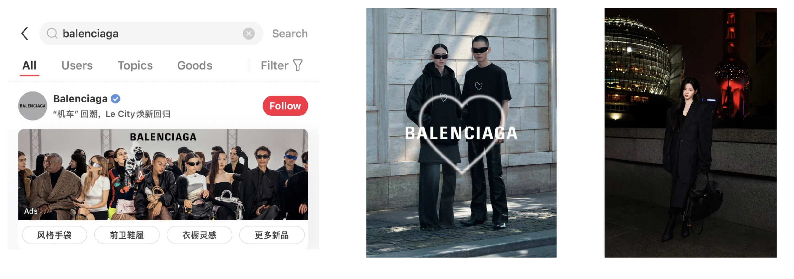

Search behavior
Review brand and product searches as context for changes in search-based indexes.

I analyzed Balenciaga’s competitive media signals and supported Love Season execution through performance reporting, daily pacing, and budget-allocation decisions.
01 / Competitive intelligence
I compared media-index movements across Baidu, WeChat, RED, Douyin, and Weibo over 2022–2024, reading each platform’s signals in the context of search and media activity.
Alongside Balenciaga, the analysis included these nine competitors:
I interpreted index movements alongside brand searches, campaigns, fashion shows, celebrity activity, and KOL/KOC content. I looked for associated patterns to discuss in the media plan without treating event timing as proof of causation.
Review brand and product searches as context for changes in search-based indexes.
Read index movements alongside fashion shows, celebrity activity, and brand campaigns.
Use product posts and hashtags as context for creator-partnership discussions.

02 / How I compared media signals
I pulled daily media-index data from the five platforms’ public performance tools for the two-year study period, cleaned the data in Excel, and built visualizations in Tableau. I used each index’s measurement logic and the surrounding search and content activity to interpret movements.
| Platform | Index basis | Signals that may influence the index |
|---|---|---|
| Baidu | Search index | Brand and product searches, brand events |
| Relevant content and ads within the WeChat ecosystem | Fashion shows and brand campaigns | |
| RED | Search index | Brand and product search behavior |
| Douyin | Brand index | KOL/KOC product posts and hashtags |
| Keyword-related content | Celebrity activity and brand campaigns |
Campaign header and collection links within search.
Back to matrix ↑Sponsored search result for a brand or campaign query.
Back to matrix ↑Sponsored creative within a discovery feed.
Back to matrix ↑Campaign imagery posted by the brand account.
Back to matrix ↑Creator-led campaign or styling content.
Back to matrix ↑Peer-led product or styling recommendations.
Back to matrix ↑03 / Campaign planning & execution
For Love Season, I prepared daily, weekly, and monthly performance reports and managed daily pacing on RED. I reviewed spend and PPC performance across campaign groups and placements, including search and bidding feeds, and used delivery and PPC data to make budget-allocation decisions.
Delivery and PPC reviews kept pacing and allocation decisions grounded in current campaign performance.
The competitive analysis informed longer-term media-planning discussions. Love Season was a separate execution workstream, where ongoing campaign performance guided day-to-day decisions.
04 / Recommendations
I presented competitive findings to senior supervisors to inform media planning and creator-partnership discussions. In Love Season, I used current delivery and PPC performance to guide daily pacing and budget allocation.
Use fashion shows and celebrity activity as context for discussing media opportunities.
Use KOL/KOC content as context for index movements and creator-partnership discussions.
Keep budget pacing and campaign performance distinct from the competitive research findings.
My contribution was to make the competitive landscape and campaign execution easier to evaluate, giving the team a clearer basis for media and creator investment discussions.